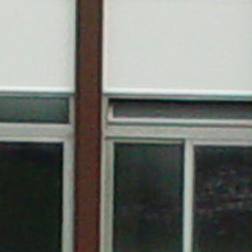
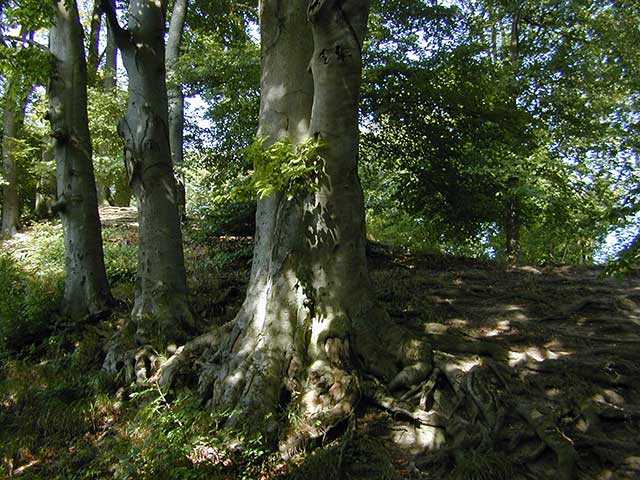

Aberrazione cromatica
Introduzione
Le frange di colore possono essere molto fastidiose, in particolar modo nei panorami ottenuti dall'unione di più fotografie. Dato che nella maggior parte dei casi queste si presentano vicino al bordo di ogni singola immagine, ricadono nella zona in cui avviene l'unione di due immagini per la creazione del panorama. Ancora peggio, cambiano colore nel passaggio della zona d'unione.
Quindi l'aberrazione cromatica deve essere corretta, se visibile, almeno per i panorami visualizzati a schermo intero o per quelli che devono essere stampati dove si richiede il raggiungimento dell'ingrandimento alla risoluzione nativa della fotocamera. Mentre la correzione è relativamente semplice, la aberrazione cromatica (abbreviato nel seguito con CA=Cromatic Aberration) non può essere determinata automaticamente come, per esempio, la distorsione a barilotto. Solo un giudizio visivo può fornire il controllo necessario del risultato. Sfortunatamente è necessaria una buona dose di esperienza per farlo.
Cos'è
La CA è un errore diffuso degli obiettivi visibile nelle immagini sotto forma di frange sfumate di colore ai bordi degli elementi fotografati. Questo fenomeno è causato dalla variabilità dell'indice di rifrazione del vetro in funzione della lunghezza d'onda della luce incidente. È possibile reperire un'esaustiva descrizione del fenomeno, con diversi collegamenti, su "wikipedia:Chromatic aberration".
Un'altra ottima descrizione è nel sito di Paul van Walree.
LCA
Indici di rifrazione diversi comportano diverse lunghezze focali per un singolo obiettivo. Questo porta a d avere diversi piani focali a seconda del colore. Si dovrebbe mettere a fuoco per ogni singolo colore: rosso, blu e verde. Questo effetto è chiamato aberrazione cromatica longitudinale (LCA=longitudinal chromatic aberration). Se si presentano delle frange vicino al centro dell'immagine che cambiano colore se si cambia leggermente la messa a fuoco, allora si è in presenza, quasi sicuramente, di aberrazione cromatica longitudinale. Questo tipo di CA:
- non può essere corretta dai programmi;
- diminuisce se si aumenta l'apertura;
- dipende dalla distanza di messa a fuoco.
TCA
Quando un obiettivo è corretto nei confronti dell'aberrazione cromatica longitudinale, i diversi colori si focalizzano più o meno nello stesso punto sull'asse ottico, ma comunque possono mettere a fuoco a distanze diverse dall'asse creando immagini di diversa dimensione a seconda del colore. Questa tipologia di errore, prende il nome di aberrazione cromatica trasversale (o laterale) (TCA=transverse chromatic aberration). Se si hanno delle frange colorate complementari che aumentano dal centro verso i bordi, si è probabilmente di fronte all'aberrazione cromatica trasversale (anche se vi sono delle eccezioni come mostrano gli esempi successivi). Questa tipologia di CA:
- può essere corretta via software;
- non cambia in funzione dell'apertura (diminuendo l'apertura, cioè aumentando gli "f", si renderanno più nitide le frange creando una sensazione di riduzione della TCA);
- dipende dalla distanza di messa a fuoco.
Cosa non è
Con la fotografia digitale sono stati introdotti nuovi tipi di frange di colore che non sono classificabili come aberrazioni cromatiche dell'obiettivo. Vengono spesso confuse con la TCA e, sfortunatamente, si presenta spesso congiunte con la TCA. Questi effetti si presentano sotto forma di frange viola o blu e sono visibili, nella maggior parte dei casi, sul contorno delle aree sovraesposte.
Possono avere origine diversa:
- dagli overflow del sensore visibili come zone ad alta luminosità (bloom). Questo effetto si presenta in genere di colore viola a causa del motivo di bayern del sensore: se una cella del sensore va in overflow verso la celle adiacenti tutte queste saranno affette dallo stesso fenomeno. Ci sono il 50% di celle verdi ma solo il 25% di rosse e il 25% di blu, nel sensore. Quindi blu e rosso vengono maggiormente pesati creando delle zone viola intorno alle aree sovraesposte. Poiché i sensori CMOS non sono inclini all'overflow, questo effetto interessa solamente i sensori CCD.
- dall'aberrazione cromatica e da altri errori dovuti alle micro lenti posizionate davanti al sensore;
- dai riflessi tra il sensore e il vetro protettivo (che potrebbe essere ricoperte e quindi generare dei riflessi colorati);
- dagli errori di interpolazione o dai filtri anti Moireè;
- dalla saturazione parziale dei colori: per esempio un cielo blu potrebbe essere visualizzato come bianco puro a causa della saturazione di tutti i canali del colore. Se nell'immagine è ripreso un oggetto scuro e sfocato, il sensore, nella regione sfocata, riceve solo parte della luce e quindi non si satura; la regione sfocata appare quindi blu. Questo è l'unico fenomeno, tra quelli descritti, che avviene anche per la pellicola analogica.
Come evitarla
la LCA può essere evitata se si aumenta il numero di f-stop (aumenta la chiusura del diaframma); anche le frange viola o blu, in genere, ne beneficiano. Nella maggior parte dei casi possono essere evitate se si espone per le zone più luminose (cioè non si sovraespone). La TCA può essere evitata solamente utilizzando un obiettivo di qualità migliore. Gli obiettivi a lunghezza focale fissa, sono meno inclini alla TCA rispetto ai poco costosi obiettivi zoom. I convertitori sono generalmente molto scarsi. È possibile evitare la TCA al momento dell'assemblatura, se non si utilizzano gli angoli in cui appare più evidentemente il fenomeno.
Come distinguerla
Se si ha l'intenzione di correggere le frange di colore utilizzando un programma, è necessario riconoscerne prima di tutto, il tipo. Se tutte le condizioni riportate nel seguito sono verificate, l'immagine è affetta, quasi certamente, da TCA:
- agli angoli si concentrano la maggior parte delle frange di colore mentre al centro il fenomeno è pressoché assente;
- le frange di colore sono non solo sui bordi delle aree sovraesposte ma anche ai bordi di quelle sottoesposte;
- le frange sono di colori complementari (rosso-ciano, blu-giallo o viola-verde) sui lati opposti delle aree buie o luminose;
- le frange di colore sono presenti in tutti gli angoli con la stessa direzione verso l'esterno a partire dal centro.
Difficoltà nel distinguerla

Se si desidera testare il proprio obiettivo per la CA, la scelta del soggetto adatto da fotografare è essenziale. La visibilità della TCA dipende fortemente dai colori che formano i bordi di contrasto. Le due immagini artificiali riportate, illustrano questo fenomeno: in entrambe, la TCA è stata introdotta ridimensionando un canale al 101%; nell'immagine superiore si tratta del canale rosso (per cui sono state ottenute delle frange rosso-ciano), mentre in quella inferiore è stato ridimensionato il canale blu (ottenendo delle frange blu-gialle).
Osservando attentamente la metà con lo sfondo azzurro in entrambe le immagini, si nota come le frange in ciano non siano visibili nell'immagine superiore nelle zone con lo sfondo in verde scuro, mentre le frange rosse diventano di un colore marrone scuro quasi invisibile.
Invece, nell'immagine inferiore, sia le frange blu che quelle gialle sono invisibili sullo sfondo, maggiormente saturato, giallo. Dove queste assumono una sfumatura più chiara di giallo, le frange blu appaiono di colore viola. Le frange gialle sono verdi sullo sfondo azzurro.
Questo dimostra come il miglior soggetto per la determinazione della CA sia composto da grigio naturale, nero e bianco non sovraesposto.
L'esempio seguente è decisamente adatto: soggetto non sovraesposto, cielo grigio e colori non saturati.
Esempio di TCA
Questa immagine è ridotta del 30% ma mostra ancora un'elevata TCA a causa dell'utilizzo di un convertitore grandangolare di scarsa qualità:
Di seguito è visualizzato un ritaglio dell'angolo superiore sinistro dell'immagine, allargato al 200%. Per verificare che si tratta di TCA, è possibile visualizzare ciclicamente i canali del colore (per esempio premendo Ctrl+1, Ctrl+2 e Ctrl+3 in Photoshop). Se tutto il contenuto dell'immagine nelle aree con colori più o meno neutrali sembra muoversi, allora si è in presenza di TCA:


(attivare le animazioni GIF per vedere i diversi canali nell'immagine di destra)
L'intero contenuto dell'immagine sembra muoversi al cambiare del canale; si tratta chiaramente di TCA. Come si può vedere, i canali hanno una diversa nitidezza dovuta fondamentalmente alla CA longitudinale.
Per confronto si riporta anche un ritaglio di dimensioni e ingrandimento simile al precedente, ma relativo alla zona centrale dell'immagine:

non sono presenti frange di colore al centro.
È possibile tentare di correggere manualmente la TCA in un angolo utilizzando Photoshop per vedere se può valer la pena correggerla sull'immagine per intero:
- ritagliare un angolo dove sia visibile la TCA;
- allargare la vista in un intervallo tra 200% e 400%;
- appiattire l'immagine se necessario;
- agire lievemente sui canali rosso e blu per tentare di minimizzare le frange. Per farlo, utilizzare nel seguente modo la scheda dei canali:
- premere sul canale rosso per renderlo attivo;
- premere sul simbolo a forma di occhio relativo al canale RGB per rendere visibili tutti i colori;
- selezionare lo strumento di movimento;
- spostare di poco il canale rosso con i tasti delle frecce fino a ottenere le frange di colore blu-giallo;
- ripetere lo stesso procedimento per il canale blu fino a ottenere il valore migliore;
- ripetere per il canale rosso se sono ancora presenti delle frange di colore rosso-verde.
Di seguito è mostrata l'immagine precedente corretta utilizzando la tecnica appena descritta:

Le frange rimanenti in colore blu chiaro non possono essere corrette; non si tratta probabilmente di TCA dell'obiettivo ma un effetto descritto nella sezione cosa non è.
Esempio senza TCA ma con frange viola
Questa immagine è ridotta al 40%. Essa mostra delle frange viola ma non presenta aberrazione cromatica:

Di seguito l'ingrandimento dell'angolo in alto a sinistra e la sequenza dei canali del colore:


(attivare le animazioni GIF per vedere i diversi canali nell'immagine di destra)
Come si nota, i dettagli dell'albero grigio non si muovono; è solamente la parte di cielo a sinistra (all'esterno) sovraesposta che cambia.
Esempio strano
Questo ritaglio (angolo in basso a sinistra) proviene da una combinazione frequentemente utilizzata: Nikon D70 con Nikkor 10.5mm full frame fisheye (immagine fornita da (c) Andrey Ilyin). Di primo acchito sembrerebbe trattarsi di una normale TCA di rosso-ciano; se però si cerca di correggerla, non se ne salterà fuori. Si osservino più attentamente i canali:


(attivare le animazioni GIF per vedere i diversi canali nell'immagine di destra)
È possibile notare che parte dei dettagli dell'immagine si spostano mentre altri no (il filo d'erba al centro). Se si minimizzano le frange qui, se ne creeranno altre o addirittura raddoppieranno i dettagli assumendo colori diversi:

Questo strano tipo di frange colorate non è sicuramente frutto della CA dell'obiettivo. È presumibile che sia dovuta alla micro lente che Nikon inserisce di fronte a ogni pixel del sensore, ma si tratta di pura supposizione.
Come correggerla
Nella maggior parte dei casi è sufficiente correggere le dimensioni dei canali del colore per correggere la TCA. Comunque, la correzione può non essere sempre soddisfacente anche se si tratta della sola TCA pura; questo può essere dovuto a diversi fattori:
- potrebbe rimenare della LCA nell'immagine. In questo caso uno o due canali di colore possono essere sfumati. Si tratta, in parte, del caso dell'esempio di TCA. È possibile rendere più nitidi, selettivamente, i canali del colore; però, dato che la maschera di affilatura lavora meglio con la sfocatura gaussiana mentre la sfocatura prodotta dalla CA è più simile a quella radiale, in questo modo non si otterrà probabilmente un risultato soddisfacente;
- le immagini hanno una compressione JPEG troppo elevata. Se si spostano i canali del colore di immagini jpeg compresse, non si farà altro che enfatizzarne gli artefatti. È invece meglio lavorare su un'immagine in formato TIFF convertita direttamente dal formato RAW o ottenuta da uno scanner;
- la correzione è grossolana e imprecisa. In funzione della risoluzione dell'immagine, potrebbe rendersi necessario un allineamento preciso al pixel.
Metodo approssimato (semplice)
Il metodo più conveniente per correggere la TCA consiste nell'utilizzare uno strumento come Adobe Raw Converter, Picture Window Pro o PTLens; si ingrandisce un angolo dell'immagine con dei buoni dettagli e si utilizzano un paio di barre scorrevoli per variare le dimensioni del canale rosso (frange rosso-ciano) e di quello blu (frange blu-giallo; quelle viola-verde sono una combinazione di rosso-ciano e blu-giallo). In entrambi i modi è possibile effettuare una correzione a livello inferiore al pixel.
Questa tecnica può essere eseguita manualmente con qualsiasi programma per immagini che permette di modificare singolarmente i canali del colore. Se l'ampiezza del passo è troppo elevata, l'immagine può essere ingrandita prima della correzione.
Comunque, se si utilizza uno di questi approcci semplificati, occorre tenere d'occhio le altre aree dell'immagine e, in particolar modo, le zone a distanze diverse dal centro; potrebbe infatti facilmente accadere che dei valori che correggono il problema in un'area creino delle frange in un'altra zona dell'immagine. Se così fosse, significa che la TCA in questa immagine non segue un semplice schema lineare e quindi non può essere corretta in questo modo; vedere il paragrafo successivo.
Metodo preciso
Il filtro di spostamento radiale dei Panorama tools, permette la correzione distinta dei canali di rosso, verde e blu utilizzando un polinomio di terzo grado. Questo tipo di curva dovrebbe essere sufficientemente complessa per poter correggere ogni tipo di TCA non lineare.
Sfortunatamente era molto difficile stimarne i valori corretti fino a quando Jim Watters e Erik Krause nel 2004, trovarono un nuovo metodo per la determinazione dei coefficienti di correzione più adatti utilizzando diversi approcci di calcolo.
Basandosi su questo lavoro, Eric Gerds sviluppò un Javascript per Photoshop CS, chiamato PTShift, che permette la correzione manuale in diverse aree e trasmette poi le deviazioni trovate come punti di controllo virtuali a PTOptimizer che si occupa poi di calcolare i coefficienti di correzione.
Alternativamente, i coefficienti di correzione, possono essere calcolati interamente con hugin e PTOptimizer; per maggiori dettagli consultare questo esempio di correzione della TCA con hugin. Per ottenere risultati ancora più precisi, può essere utilizzato il programma "octave" (script nella pagina di hugin: [1]) per calcolare i coefficienti in luogo di PTOptimizer. Un'alternativa al filtro dello spostamento radiale è rappresentata da fulla che è anche in grado di correggere contemporaneamente la TCA, la distorsione a barilotto e la vignettatura.
Erik Krause 17:18, 2 Maggio 2005 (EDT)
Collegamenti esterni
- Wikipedia:Chromatic aberration
- dpreview sull'aberrazione cromatica
- articolo di Michel Thoby: Illusione e realtà; come appare la TCA?